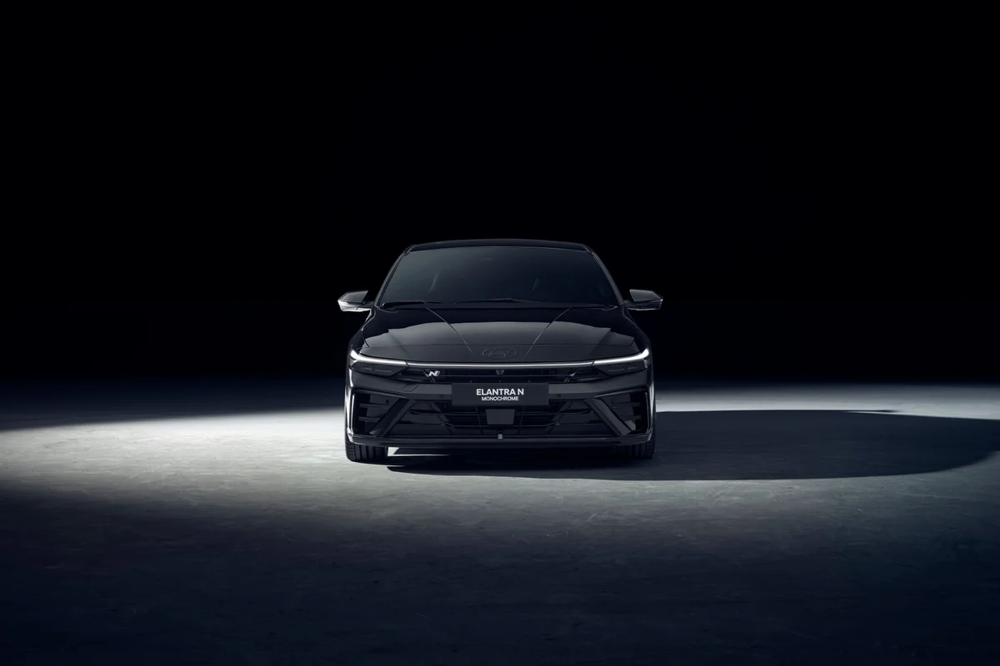
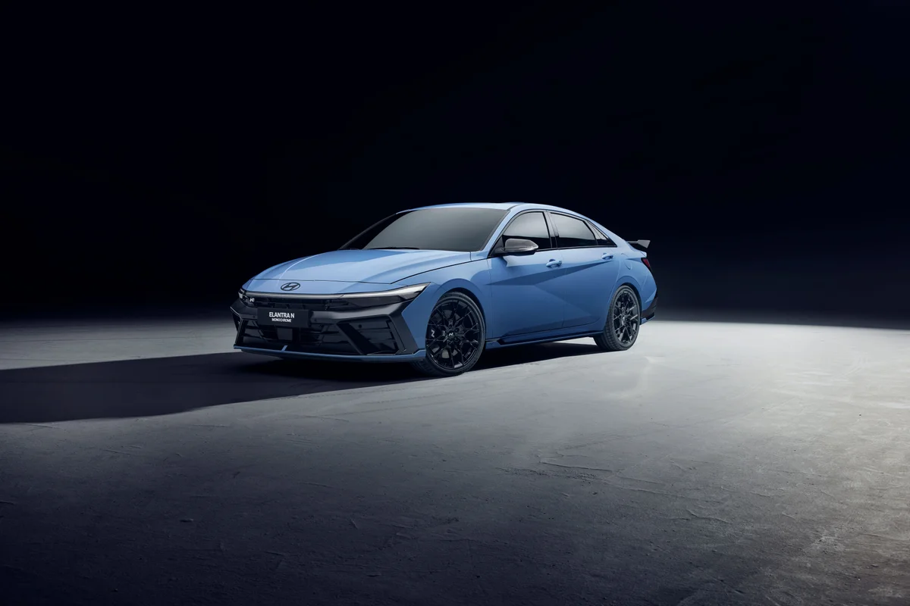
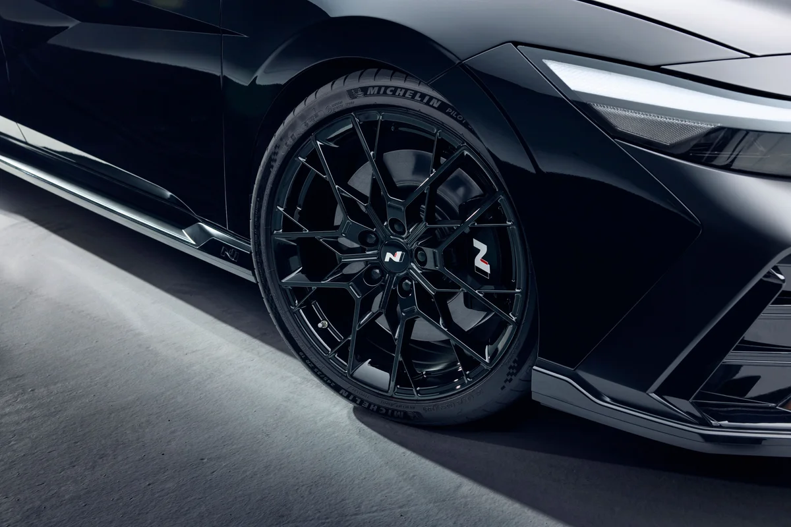
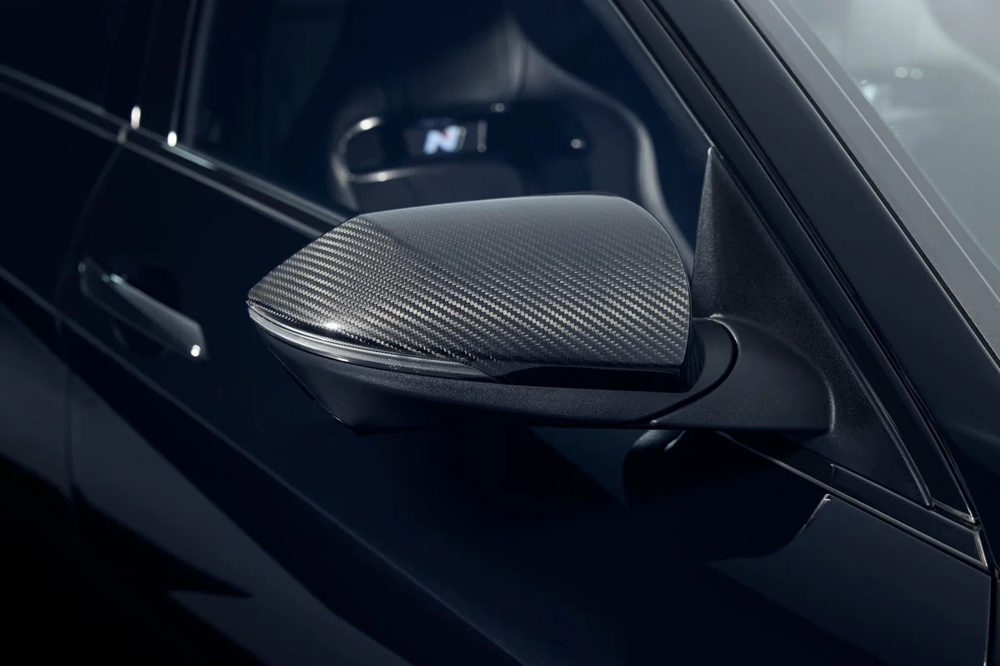
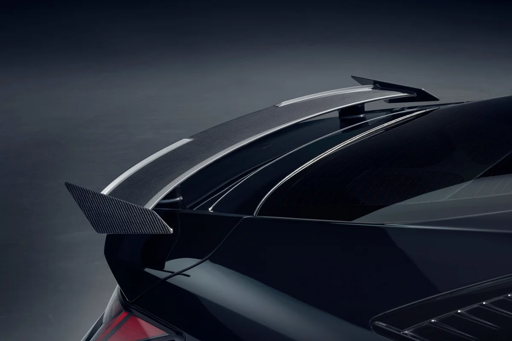
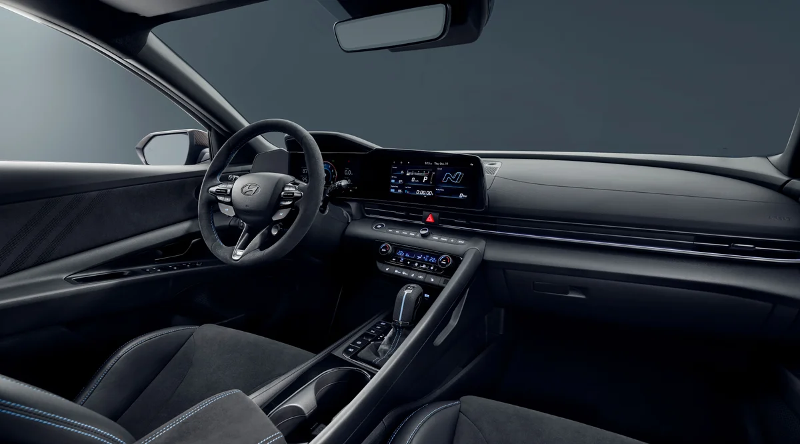
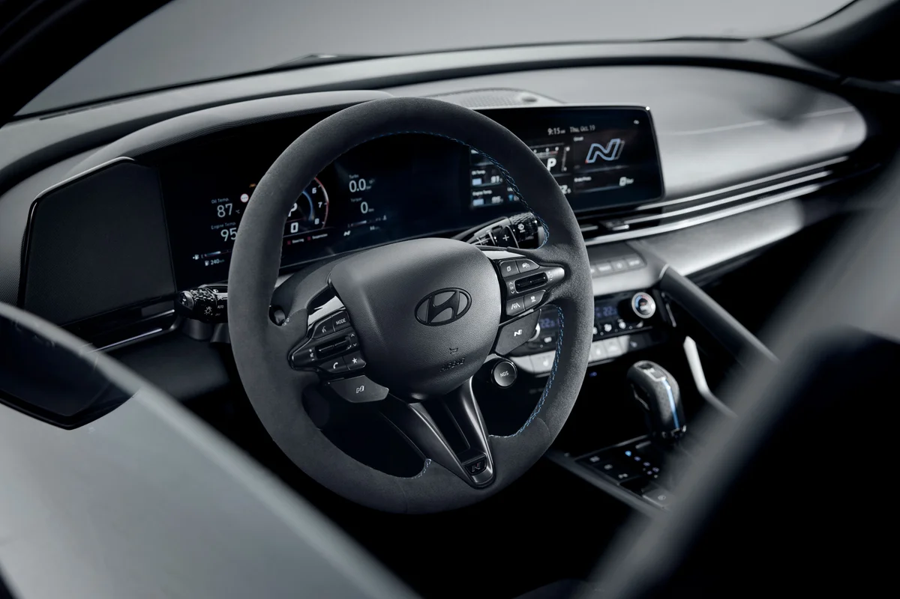
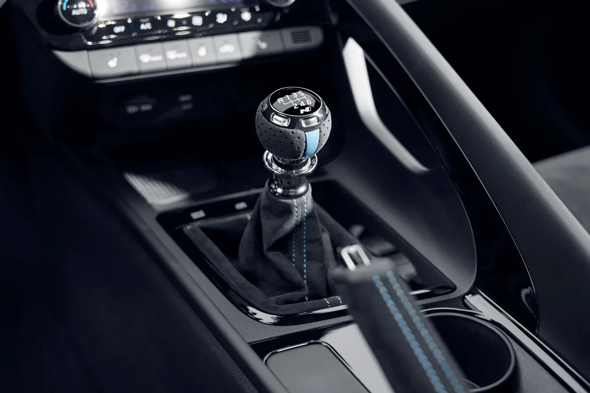
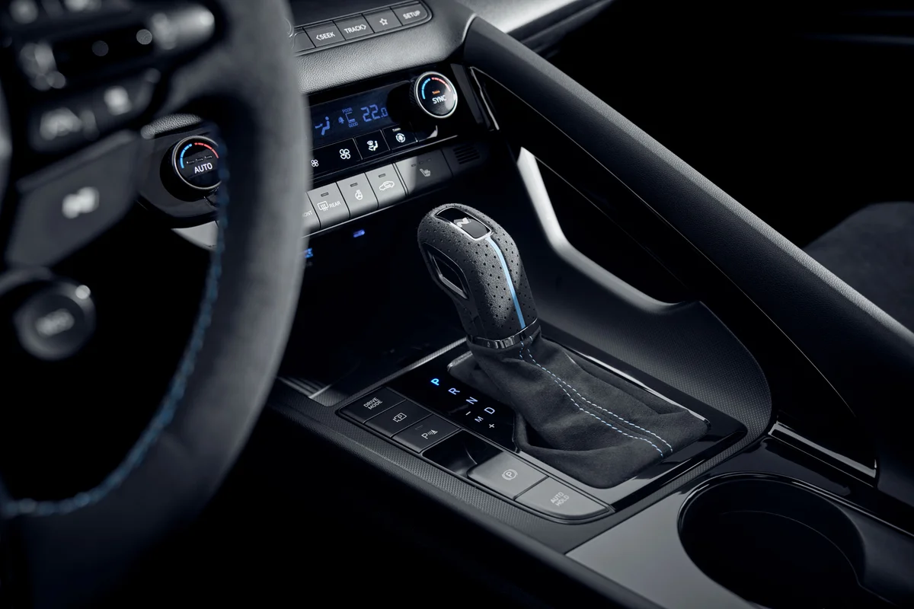
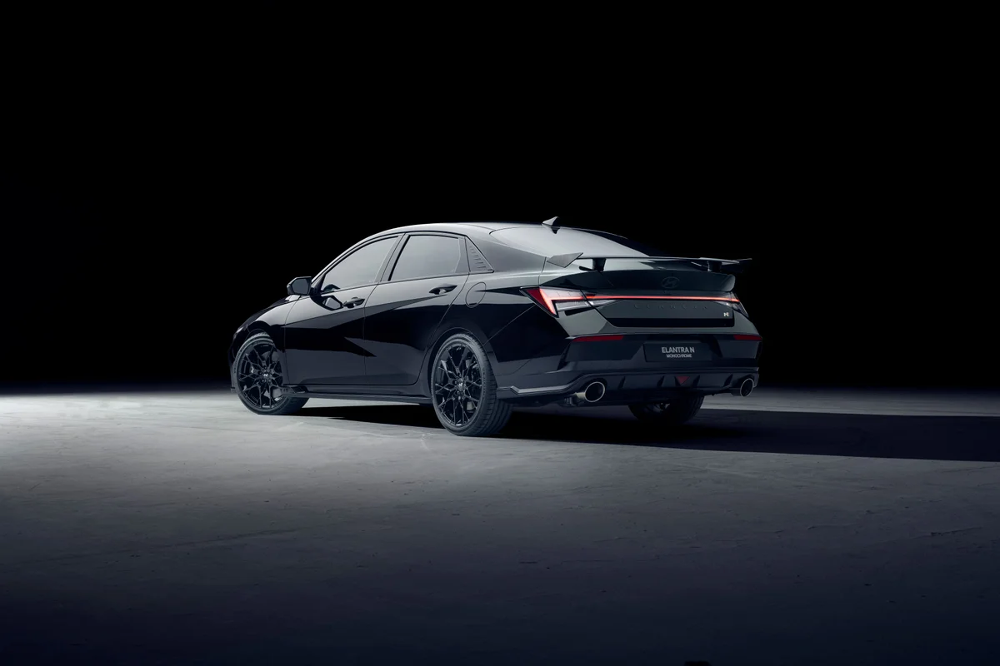

▲ 아반떼 N 모노크롬 블랙과 퍼포먼스 블루 ⓒ 현대자동차 (제조사 제공 사진)
"아반떼 N 모노크롬이 나왔다는데, 이게 진짜 마지막 아반떼 N인가?" 10월 19일 공개 소식에 이런 궁금증이 먼저 들었다면 아래 표부터 보면 된다. 현대차가 직접 밝힌 것과 일부 매체가 덧붙인 해석을 나눠서 정리했다.
결론부터 말하면 모노크롬은 외장·실내의 색과 소재를 바꾼 스페셜 에디션이고, 공개된 자료에는 엔진 출력을 바꿨다는 언급이 없다. 현대차 공개 자료에는 "파이널"이라는 표현도, 한정 수량도, 가격도 없다. 이 글은 현대차 뉴스룸·가격표와 국내외 보도를 바탕으로 한 2026-10-20 기준 정리다.
1. 현대차가 직접 밝힌 것과 밝히지 않은 것
공식 자료는 현대차 글로벌 뉴스룸이다. 여기에는 단색 테마의 외장, 새 단조 휠, 알칸타라 소재 실내, 두 가지 색상, 한국·캐나다·호주 우선 출시 계획이 적혀 있다. 가격·사양·수량은 시장별로 다를 수 있어 판매 채널에서 안내한다는 문구만 있다.
국내 매체(전자신문·모터그래프·머니투데이)도 같은 내용을 전했고, 국내 출시일 29일과 전시·팝업 일정이 추가됐다. 현대차 N 매니지먼트 담당 박준우 임원(해외 뉴스룸 직함은 VP·Head of N Management Group)의 발언으로 "화려함은 덜어내고 디테일을 채웠다"는 취지가 보도됐다.
| 항목 | 확인 상태 | 근거 |
|---|---|---|
| 색상 2종 | 공식 확인 | 현대차 글로벌 뉴스룸 |
| 전용 단조 휠·단색 범퍼·캘리퍼 | 공식 확인 | 현대차 글로벌 뉴스룸 |
| 알칸타라 실내·카본 외장 일부 | 공식 확인 | 뉴스룸, 국내 보도 |
| 국내 출시일 10월 29일 | 보도 기준 | 뉴스룸은 "10월 말(late October)"로만 표기, 현대차 국내 보도자료에서는 확인하지 못함 |
| 가격 | 미공개 | 뉴스룸·국내 보도 모두 언급 없음 |
| 한정 수량 | 미공개 | 수량 언급 없음 |
| 엠블럼·휠 크기 | 확인 못 함 | 확인한 보도에 기재 없음 |
| 파이널 에디션 | 공식 확인 안 됨 | 모터그래프는 제목에서 물음표로만 사용 |
뉴스룸 원문은 아래 버튼에서 볼 수 있다. 현대차 글로벌 뉴스룸 원문 바로가기
▲ 아반떼 N 모노크롬 블랙과 퍼포먼스 블루. 현대차가 제공한 홍보 사진이다 ⓒ 현대자동차 (제조사 제공 사진)
2. 무엇이 바뀌었나: 색, 휠, 알칸타라, 카본
핵심은 현행 아반떼 N의 상징이던 빨간 포인트를 걷어낸 것이다. 현대차는 차체색에 맞춘 단색 범퍼, 사이드실, 브레이크 캘리퍼, 리어 디퓨저를 적용했다고 밝혔다. 카스쿱스는 기존 N 에어로 키트의 빨간 요소가 차체색으로 바뀌었다고 설명했다.

▲ 블랙 모노크롬의 정면 ⓒ 현대자동차 (제조사 제공 사진)

▲ 퍼포먼스 블루. 단색 처리로 N 특유의 빨간 라인이 사라졌다 ⓒ 현대자동차 (제조사 제공 사진)
| 부위 | 변경 내용 |
|---|---|
| 색상 | 블랙(Abyss Black Pearl), 퍼포먼스 블루 2종 |
| 휠 | 새로 디자인한 전용 단조 휠(사진상 검은색, 크기 미공개) |
| 범퍼·사이드실·디퓨저 | 차체색·단색 처리 |
| 브레이크 캘리퍼 | 단색(보도상 검은색) |
| 카본 부품 | 카본 리어 스포일러·사이드미러 커버는 상위 트림(Upper trim)에 추가(해외 뉴스룸 기준). 기본 트림은 블랙 테마 외장과 알칸타라 소재. 국내 보도는 "사이드미러 등"으로만 표기 |
| 스티어링 휠 | 알칸타라, 버튼은 단색 |
| 시트·도어 트림 | 알칸타라 적용(카스쿱스 보도), 파란 스티칭 |

▲ 전용 단조 휠 근접. 휠 중앙에 N 로고가 보이며 휠 크기는 공개되지 않았다 ⓒ 현대자동차 (제조사 제공 사진)

▲ 카본 사이드미러 커버(해외 뉴스룸상 상위 트림 적용) ⓒ 현대자동차 (제조사 제공 사진)

▲ 카본 리어 스포일러. 뉴스룸은 상위 트림에 적용된다고 밝혔다 ⓒ 현대자동차 (제조사 제공 사진)
3. 실내: 알칸타라와 어두운 톤
실내는 검은 알칸타라가 중심이다. 현대차는 모노크롬 전용 알칸타라 스티어링 휠과 검은 버튼을 언급했다. 카스쿱스는 시트·도어·센터 암레스트까지 알칸타라이며 하늘색 스티칭이 들어간다고 전했다. 공식 자료에서 확인되는 범위는 "일부 부품"이어서, 시트 소재는 출시 때 공개될 사양표로 다시 확인하는 편이 안전하다.

▲ 모노크롬 실내 전경. 어두운 톤으로 통일됐다 ⓒ 현대자동차 (제조사 제공 사진)

▲ 알칸타라 스티어링 휠과 계기판 ⓒ 현대자동차 (제조사 제공 사진)
📍 수동 vs DCT, 사진으로 확인되는 것
- 현대차 공개 사진에는 수동변속기 레버(파란 스티칭 부츠)와 DCT 변속 레버가 모두 나온다
- 다만 모노크롬이 두 변속기를 모두 제공하는지는 국내 사양표 공개 전까지 확정하기 어렵다

▲ 수동 레버. 파란 스티칭이 보인다 ⓒ 현대자동차 (제조사 제공 사진)

▲ DCT 변속 레버와 센터 콘솔 ⓒ 현대자동차 (제조사 제공 사진)
4. 달라지지 않은 것: 280마력과 현행 가격표
모노크롬은 파워트레인을 건드리지 않았다. 현대차 국내 가격표(2026년 10월 1일 기준)의 아반떼 N은 N 전용 2.0 가솔린 터보(280마력)에 6단 수동변속기를 기본으로 한다. 뉴스룸과 국내 보도 어디에도 출력 상향이나 섀시 튜닝 언급은 없다. 카스쿱스가 적은 286마력(hp)·392Nm는 해외 보도 수치로, 국내 공식 표기(280마력)와 다르다. 마력 단위(PS/hp) 차이도 있고 카프리즘 기존 비교 기사는 미국형 아반떼 N을 276hp로 적었으므로, 286hp는 확인되지 않은 수치다.
| 구분 | 가격 | 비고 |
|---|---|---|
| 아반떼 N 6단 수동 | 3,356만 원 | 280마력 2.0 터보, 레브 매칭 포함 |
| N DCT 패키지 선택 | +208만 원 | 합산 시 3,564만 원(직접 합산) |
| 선루프 | +45만 원 | 선택품목 |
| 19인치 초경량 단조 휠 | +79만 원 | 선택품목, 모노크롬 휠과 같은지 미확인 |
| N 라이트 스포츠 버켓 시트 | +109만 원 | 선택품목 |
가격표는 현대차 홈페이지에서 직접 볼 수 있다. 현대차 아반떼 N 가격표 바로가기
모노크롬 가격은 아직 없다. 현행 N에 알칸타라·카본·전용 휠이 더해지는 만큼 기본 N보다 높게 책정될 가능성은 있지만, 얼마인지는 추정할 근거가 없어 숫자를 쓰지 않는다. 출시 직후 가격표가 나오면 확인이 필요하다.
5. 판매 방식과 일정
보도된 일정은 아래와 같다. 한정 수량이나 사전계약 방식은 확인한 자료에 없고, 국내 출시 후 해외로 확대된다는 설명만 있다. 해외는 한국·캐나다·호주에서 먼저 시작한다고 현대차가 밝혔다.
| 날짜 | 내용 |
|---|---|
| 10월 19일 | 공개 |
| 10월 29일 | 국내 출시 |
| 10월 31일~11월 1일 | 에버랜드 스피드웨이 현대 N 페스티벌에서 실물 첫 전시 |
| 11월 5일~ | 서울 신세계백화점 팝업스토어 |
| 11월 13일~ | 대구 신세계백화점 팝업스토어 |

▲ 블랙 모노크롬 후면 ⓒ 현대자동차 (제조사 제공 사진)
6. "파이널 에디션"일까: 공식과 보도를 구분하면
공식 자료에서 확인되는 사실은 이렇다. 모노크롬은 "스페셜 에디션"이고, 단종·후속 계획은 어디에도 없다. 모터그래프의 제목에 있는 "파이널 에디션?"은 물음표가 붙은 질문이며, 확인한 본문에는 그런 설명이 없다.
해외 보도는 조금 다르다. 카스쿱스는 모노크롬을 "고별 스페셜"에 가깝다고 평가하면서, 현재 아반떼 N이 이전 세대 아반떼를 기반으로 하고 8세대 신형이 이미 한국에서 나왔다는 점을 근거로 들었다. 새 세대 아반떼 N이 2027년에 나올 것이라는 전망도 함께 실었는데, 근거로 링크한 것은 렌더링 기사이며 현대차 발표가 아니다.
📍 공식 확인 vs 매체 해석
- 공식: 모노크롬은 스페셜 에디션, 성능 변경 없음
- 보도: 카스쿱스는 고별 성격, 2027년 신형 N 예상(현대차 미확인)
- 카프리즘 기존 기사: 8세대 아반떼 공개 당시에도 현대차가 N 라인이나 고성능 버전 출시 계획을 공식화하지 않았다고 정리했다
8세대는 2026년 8월 5일 계약을 시작했고, 첫날 계약이 1만1,094대로 7세대(1만58대)를 넘었다. 자세한 내용은 8세대 아반떼 공개 기사와 첫날 계약 기사에서 볼 수 있다. 현행 N이 언제까지 판매될지는 확인하지 못했다.
7. 누가, 어떤 기준으로 볼까
8세대 아반떼 가솔린 2.0 모던은 2,398만 원부터다(현대차 가격표 2026-10-01 기준). 현행 아반떼 N 6단 수동 3,356만 원과는 958만 원 차이다. 8세대 가격 기준은 차 없이 한 달 vs 내 차 월비용 비교 기사와 같다.
- 성능이 목적이라면: 모노크롬은 성능을 올리지 않았으니 가격 차이를 따져봐야 한다. 색·소재가 마음에 들 때 의미가 있다
- 되팔 계획이 있다면: 미국 중고 시장에서 N 라인업의 감가가 크다는 분석을 중고 N 기사에서 다뤘다
- 수동 위주라면: 비슷한 가격대 수동 세단 비교는 WRX와 아반떼 N 비교 기사에서 볼 수 있다
✅ 계약 전 확인할 것
· 가격표: 10월 29일 이후 현대차 홈페이지 모노크롬 가격 확인
· 변속기: 수동·DCT 중 선택 가능한 조합
· 트림: 국내에서 스포일러 카본 트림이 따로 나뉘는지
· 수량: 한정 판매인지 상시 판매인지
8. 요약
아반떼 N 모노크롬은 블랙·퍼포먼스 블루 두 가지 단색에 전용 단조 휠, 알칸타라, 카본 부품을 더한 스페셜 에디션이다. 현대차는 10월 19일 공개했고 국내 출시일은 10월 29일로 보도됐다. 성능은 현행 아반떼 N의 280마력 그대로다.
가격·한정 수량·엠블럼은 공개되지 않았고, "파이널 에디션"도 현대차가 밝힌 말이 아니다. 해외 일부 매체가 고별 스페셜로 해석했을 뿐이며, 신형 N의 2027년 등장도 매체 예상이다. 현행 아반떼 N 가격은 수동 3,356만 원이고, DCT 패키지를 더하면 3,564만 원이다.